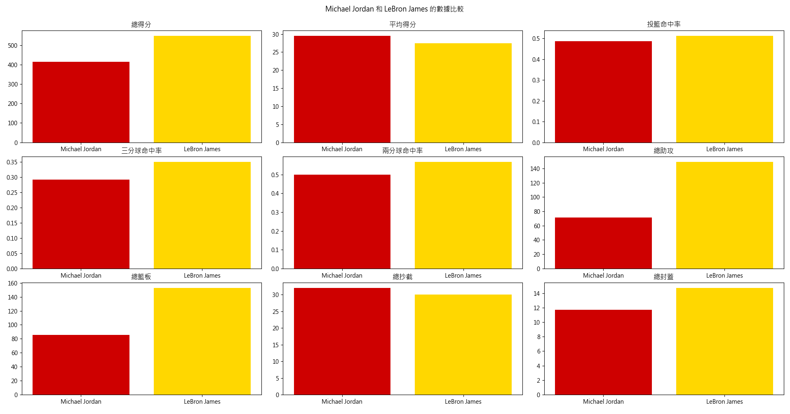

"""
|Season:賽季|Age:年齡|Tm:隊伍|Lg:聯盟|Pos:位置|G:比賽數|GS:首發數|MP:平均上場時間（每場比賽）|FG:投籃命中數|FGA:投籃出手數|FG%:投籃命中率|3P:三分球命中數|3PA:三分球出手數|3P%:三分球命中率|2P:
兩分球命中數|2PA:兩分球出手數|2P%:兩分球命中率|eFG%:有效命中率|FT:罰球命中數|FTA:罰球出手數|FT%:罰球命中率|ORB:進攻籃板|DRB:防守籃板|TRB:總籃板|AST:助攻|STL:抄截|BLK:阻攻|TOV:失誤|PF:犯規|PTS:得分|Awards:獎項|
"""
import requests
from bs4 import BeautifulSoup
def fetch_player_data(url):
response = requests.get(url)
html = response.text
soup = BeautifulSoup(html, 'html.parser')
table = soup.find('table', id='per_game')
headers = [th.text for th in table.find('thead').find_all('th')]
rows = table.find('tbody').find_all('tr')
data = []
for row in rows:
cells = row.find_all(['th', 'td'])
data.append([cell.text.strip() for cell in cells])
return headers, data
url1 = 'https://www.basketball-reference.com/players/j/jamesle01.html'
url2 = 'https://www.basketball-reference.com/players/j/jordami01.html'
headers1, data1 = fetch_player_data(url1)
headers2, data2 = fetch_player_data(url2)
print("LeBron James 的數據:")
print(headers1)
for row in data1:
print(row)
print("\nMichael Jordan 的數據:")
print(headers2)
for row in data2:
print(row)
# # 合併成一個字典
# all_data = {
# 'LeBron James': data1,
# 'Michael Jordan': data2
# }
# print(all_data)
import mysql.connector
from mysql.connector import Error
from scraper import all_data
import logging
# logging.basicConfig(level=logging.INFO,
logging.basicConfig(level=logging.CRITICAL,
format='%(asctime)s - %(levelname)s - %(message)s')
def create_connection():
try:
connection = mysql.connector.connect(
host='localhost',
port='3306',
user='root',
password=' ',
database='NBA'
)
logging.info("資料庫連接成功")
return connection
except Error as e:
logging.error(f"資料庫連接錯誤: {e}")
return None
def create_database_and_table(cursor):
try:
cursor.execute("CREATE DATABASE IF NOT EXISTS `NBA`;")
cursor.execute("USE `NBA`;")
cursor.execute("""
CREATE TABLE IF NOT EXISTS `Regular_Season` (
id INT AUTO_INCREMENT PRIMARY KEY,
Player_Name VARCHAR(50),
Season VARCHAR(10),
Age INT,
Tm VARCHAR(10),
Lg VARCHAR(10),
Pos VARCHAR(5),
G INT,
GS INT,
MP FLOAT,
FG FLOAT,
FGA FLOAT,
FG_Percentage FLOAT,
`3P` FLOAT,
`3PA` FLOAT,
`3P_Percentage` FLOAT,
`2P` FLOAT,
`2PA` FLOAT,
`2P_Percentage` FLOAT,
eFG_Percentage FLOAT,
FT FLOAT,
FTA FLOAT,
FT_Percentage FLOAT,
ORB FLOAT,
DRB FLOAT,
TRB FLOAT,
AST FLOAT,
STL FLOAT,
BLK FLOAT,
TOV FLOAT,
PF FLOAT,
PTS FLOAT,
UNIQUE KEY `player_season` (Player_Name, Season)
);
""")
logging.info("表格創建完成或已存在")
except Error as e:
logging.error(f"創建資料庫或表格時出錯: {e}")
def clean_and_convert(value):
if value == '' or value == 'None':
return None
try:
return float(value)
except ValueError:
return value
def insert_data(cursor, connection):
insert_query = """
INSERT IGNORE INTO `Regular_Season` (
Player_Name, Season, Age, Tm, Lg, Pos, G, GS, MP, FG, FGA, FG_Percentage,
`3P`, `3PA`, `3P_Percentage`, `2P`, `2PA`, `2P_Percentage`,
eFG_Percentage, FT, FTA, FT_Percentage, ORB, DRB, TRB, AST, STL,
BLK, TOV, PF, PTS
) VALUES (%s, %s, %s, %s, %s, %s, %s, %s, %s, %s, %s, %s, %s, %s, %s, %s, %s, %s,
%s, %s, %s, %s, %s, %s, %s, %s, %s, %s, %s, %s, %s);
"""
error_records = []
inserted_count = 0
for player, records in all_data.items():
for record in records[1:]: # 跳過標題行
try:
processed_record = [player] + [clean_and_convert(value) for value in record[:-1]] # 排除最後一個欄位（獎項）
if len(processed_record) != 31: # 30個欄位 + player_name
if "Did Not Play" in record[1]: # 處理特殊情況
continue # 跳過這個記錄
else:
logging.warning(f"跳過記錄,欄位數不正確: {player}, {record[0]}")
error_records.append((player, record))
continue
cursor.execute(insert_query, tuple(processed_record))
if cursor.rowcount > 0:
inserted_count += 1
except Error as e:
logging.error(f"插入記錄時出錯 {player}, {record[0]}: {e}")
error_records.append((player, record))
connection.commit()
logging.info(f"資料插入完成，新增了 {inserted_count} 條記錄")
return error_records
def main():
connection = create_connection()
if connection is not None:
cursor = connection.cursor()
create_database_and_table(cursor)
error_records = insert_data(cursor, connection)
if error_records:
logging.warning("以下記錄插入失敗:")
for player, record in error_records:
logging.warning(f"{player}: {record}")
cursor.execute("SELECT COUNT(*) FROM Regular_Season;")
row_count = cursor.fetchone()
logging.info(f"Regular_Season 表格中的資料總筆數: {row_count[0]}")
cursor.close()
connection.close()
else:
logging.error("無法建立資料庫連接")
if __name__ == "__main__":
main()
"""
pip install mysql-connector-python pandas matplotlib
"""
import mysql.connector
from mysql.connector import Error
import pandas as pd
import matplotlib.pyplot as plt
import logging
logging.basicConfig(level=logging.INFO,
# logging.basicConfig(level=logging.CRITICAL,
format='%(asctime)s - %(levelname)s - %(message)s')
def create_connection():
try:
connection = mysql.connector.connect(
host='localhost',
port='3306',
user='root',
password=' ',
database='NBA'
)
logging.info("資料庫連接成功")
return connection
except Error as e:
logging.error(f"資料庫連接錯誤: {e}")
return None
def fetch_player_data(cursor, player_name):
query = f"SELECT * FROM Regular_Season WHERE Player_Name = '{player_name}';"
cursor.execute(query)
result = cursor.fetchall()
columns = [desc[0] for desc in cursor.description]
return pd.DataFrame(result, columns=columns)
def analyze_and_plot(jordan_df, lebron_df):
players = ['Michael Jordan', 'LeBron James']
# 計算數據
total_points = [jordan_df['PTS'].sum(), lebron_df['PTS'].sum()]
avg_points = [jordan_df['PTS'].mean(), lebron_df['PTS'].mean()]
fg_percentage = [jordan_df['FG_Percentage'].mean(), lebron_df['FG_Percentage'].mean()]
tp_percentage = [jordan_df['3P_Percentage'].mean(), lebron_df['3P_Percentage'].mean()]
twop_percentage = [jordan_df['2P_Percentage'].mean(), lebron_df['2P_Percentage'].mean()]
total_assists = [jordan_df['AST'].sum(), lebron_df['AST'].sum()]
total_rebounds = [jordan_df['TRB'].sum(), lebron_df['TRB'].sum()]
total_steals = [jordan_df['STL'].sum(), lebron_df['STL'].sum()]
total_blocks = [jordan_df['BLK'].sum(), lebron_df['BLK'].sum()]
# 繪圖
plt.rcParams['font.family'] = 'Microsoft JhengHei' # 設置中文字體
fig, ax = plt.subplots(3, 3, figsize=(18, 18))
fig.suptitle("Michael Jordan 和 LeBron James 的數據比較")
colors = ['#CE0000', '#FFD700'] # 設置顏色，紅色和深黃色
# 總得分
ax[0, 0].bar(players, total_points, color=colors)
ax[0, 0].set_title('總得分')
# 平均得分
ax[0, 1].bar(players, avg_points, color=colors)
ax[0, 1].set_title('平均得分')
# 投籃命中率
ax[0, 2].bar(players, fg_percentage, color=colors)
ax[0, 2].set_title('投籃命中率')
# 三分球命中率
ax[1, 0].bar(players, tp_percentage, color=colors)
ax[1, 0].set_title('三分球命中率')
# 兩分球命中率
ax[1, 1].bar(players, twop_percentage, color=colors)
ax[1, 1].set_title('兩分球命中率')
# 總助攻
ax[1, 2].bar(players, total_assists, color=colors)
ax[1, 2].set_title('總助攻')
# 總籃板
ax[2, 0].bar(players, total_rebounds, color=colors)
ax[2, 0].set_title('總籃板')
# 總抄截
ax[2, 1].bar(players, total_steals, color=colors)
ax[2, 1].set_title('總抄截')
# 總封蓋
ax[2, 2].bar(players, total_blocks, color=colors)
ax[2, 2].set_title('總封蓋')
plt.tight_layout(rect=[0, 0, 1, 0.96])
plt.show()
def main():
connection = create_connection()
if connection is not None:
cursor = connection.cursor()
jordan_df = fetch_player_data(cursor, 'Michael Jordan')
lebron_df = fetch_player_data(cursor, 'LeBron James')
analyze_and_plot(jordan_df, lebron_df)
cursor.close()
connection.close()
else:
logging.error("無法建立資料庫連接")
if __name__ == "__main__":
main()
從圖表上可以看到Michael Jordan和LeBron James在各項數據上的比較，以下總結：
總得分與平均得分:
LeBron James的總得分和平均得分均高於Michael Jordan，這意味著LeBron James在得分方面有著更長期且穩定的表現。
投籃命中率:
LeBron James的投籃命中率略高於Michael Jordan，這顯示出LeBron James在投籃方面更為高效。
三分球命中率與兩分球命中率:
LeBron James在三分球命中率和兩分球命中率方面也領先於Michael Jordan，這進一步證明了LeBron James的全能性，能在場上多個位置得分。
總助攻與總籃板:
LeBron James在總助攻和總籃板方面也有明顯優勢，這顯示出LeBron James不僅能得分，還能有效地組織進攻和保護籃板。
防守數據:
抄截和封蓋方面，LeBron James同樣領先於Michael Jordan，這表明LeBron James在防守端也有出色的表現。
綜合考量:
LeBron James在多項數據上都優於Michael Jordan，顯示出其在場上的多面性和穩定性。不過，Michael Jordan的成就也不容忽視。他在80年代和90年代的統治力，以及在季後賽中的表現，為他贏得了許多球迷的喜愛。
G.O.A.T.（Greatest of All Time）:
在評判誰是史上最佳球員（G.O.A.T.）時，不僅僅是數據上的比較，還需要考慮球員對比賽的影響力、在關鍵時刻的表現、所獲得的獎項和榮譽等多方面的因素。以下是一些考量點：
Michael Jordan:
- 6次NBA總冠軍，6次總決賽MVP，5次常規賽MVP。
- 在1990年代帶領芝加哥公牛隊實現了兩個三連冠，對比賽的影響深遠。
- 在季後賽中表現突出，被譽為“大心臟”球員。
LeBron James:
- 4次NBA總冠軍，4次總決賽MVP，4次常規賽MVP。
- 在多支球隊都取得了巨大成功，展現了超凡的領袖能力。
- 持續多年保持高水準的表現，是現役球員中的佼佼者。
因此:
無論是Michael Jordan還是LeBron James，都有強有力的論據被認為是史上最佳球員。最終的判斷可能取決於個人對比賽風格的偏好和對不同時代球員的理解。
也許這個問題沒有絕對的答案，每個人心中都有自己的G.O.A.T.。重要的是，兩位球員都在NBA歷史上留下了不可磨滅的印記，激勵了無數球迷和年輕球員。